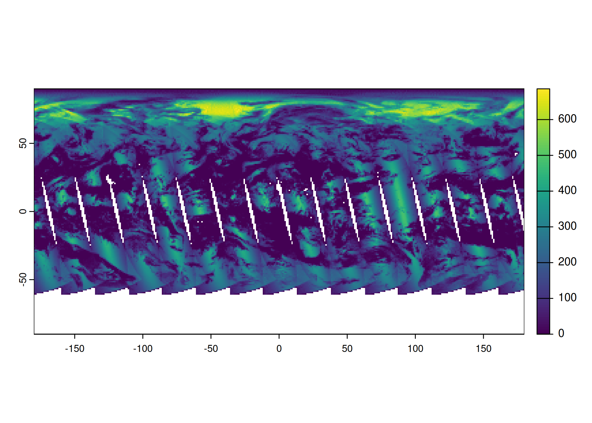

library(rhdf5)
library(gdalraster)
library(stars)
library(terra)
library(rnaturalearth)1 MODIS
In these examples, we will use data from: Earth data. This website provides direct access to ocean color data products from various satellite missions, including MODIS. You can find Level-3 binned and mapped data here.
1.1 L3BIN (Level-3 Binned Data) - HDF5
Level-3 binned (L3b) files are HDF5 files containing data that has been statistically processed and binned into spatial grids. The data is organized in layers, where each layer represents a different variable. These layers are stored in the /level-3_binned_data group within the HDF5 file. The BinList layer is particularly important, as it contains the bin information, such as the bin’s coordinates and the bin’s weights, which are crucial for proper interpretation of the data.
In R, these files can be read using the rhdf5 package from bioconductor. If you haven’t already, you’ll need to install the rhdf5 package. The following code shows how to install the package and then reads the chlor_a layer (chlorophyll-a concentration) from the file A2016160.L3b_DAY_CHL.nc:
if (!require("BiocManager", quietly = TRUE)) {
install.packages("BiocManager")
}
BiocManager::install()
BiocManager::install("rhdf5")The h5ls() function will list all the layers included in the HDF5 file. This is useful for exploring the file’s structure and identifying the available datasets.
file <- fs::path("data", "AQUA_MODIS.20160608.L3b.DAY.CHL.nc")
h5ls(file)Datatype: binDataType
Datatype: binIndexType
Datatype: binListType| group | name | otype | dclass | dim | |
|---|---|---|---|---|---|
| 0 | / | level-3_binned_data | H5I_GROUP | ||
| 1 | /level-3_binned_data | BinIndex | H5I_DATASET | COMPOUND | 4320 |
| 2 | /level-3_binned_data | BinList | H5I_DATASET | COMPOUND | 2417047 |
| 3 | /level-3_binned_data | binDataDim | H5I_DATASET | FLOAT | 0 |
| 4 | /level-3_binned_data | binIndexDim | H5I_DATASET | FLOAT | 0 |
| 5 | /level-3_binned_data | binListDim | H5I_DATASET | FLOAT | 0 |
| 6 | /level-3_binned_data | chlor_a | H5I_DATASET | COMPOUND | 2417047 |
| 7 | / | processing_control | H5I_GROUP | ||
| 8 | /processing_control | input_parameters | H5I_GROUP |
Finally, use h5read() to open a specific layer:
df <- h5read(file, "/level-3_binned_data/chlor_a")
head(df)| sum | sum_squared |
|---|---|
| 0.1869691 | 0.03495743 |
| 0.2829849 | 0.05712159 |
| 0.4636284 | 0.09679225 |
| 0.6681932 | 0.13557214 |
| 0.5648066 | 0.12085202 |
| 0.4852219 | 0.09646683 |
The resulting data frame df will contain the binned chlorophyll-a data. The columns in this data frame represent:
sum: The sum of the chlorophyll-a values of all pixels within the bin.sum_squared: The sum of the squared chlorophyll-a values within the bin. This can be used to calculate the variance or standard deviation of the data within the bin.
Important: Applying Weights
It is crucial to understand that the observed values in the sum column need to be weighted to obtain the actual average chlorophyll-a concentration for each bin. The weights, representing the relative contribution of each pixel to the bin, are stored in the BinList layer.
To apply the weights, read the BinList layer and divide the sum column by the weights column:
bins <- h5read(file, "/level-3_binned_data/BinList")
df[["sum"]] <- df[["sum"]] / bins[["weights"]]
head(df)| sum | sum_squared |
|---|---|
| 0.1869691 | 0.03495743 |
| 0.2001005 | 0.05712159 |
| 0.2073409 | 0.09679225 |
| 0.2014678 | 0.13557214 |
| 0.2134768 | 0.12085202 |
| 0.1980910 | 0.09646683 |
The df[["sum"]] column now contains the weighted average chlorophyll-a concentration for each bin. You can now perform further analysis or visualization with this data.
1.2 L3MAP (Level-3 Mapped Data) - NetCDF
Level-3 mapped (L3m) data represents geophysical variables projected onto a regular grid. These files are typically easier to visualize than L3b data because they are already in a gridded format.
file <- fs::path("data", "AQUA_MODIS.20160608.L3m.DAY.CHL.chlor_a.4km.nc")
r <- rast(file)
rclass : SpatRaster
dimensions : 4320, 8640, 1 (nrow, ncol, nlyr)
resolution : 0.04166667, 0.04166667 (x, y)
extent : -180, 180, -90.00001, 90 (xmin, xmax, ymin, ymax)
coord. ref. : +proj=longlat +datum=WGS84 +no_defs
source : AQUA_MODIS.20160608.L3m.DAY.CHL.chlor_a.4km.nc:chlor_a
varname : chlor_a (Chlorophyll Concentration, OCI Algorithm)
name : chlor_a
unit : mg m^-3 This shows the raster’s metadata, such as the number of layers, the number of rows and columns, the resolution, and the extent.
wm <- ne_countries(scale = "medium", returnclass = "sf")
plot(wm[["geometry"]], col = "lightgray", lwd = 0.5)
plot(r, add = TRUE, col = terrain.colors(10L))
1.3 L3BIN (Level-3 Binned Data) - hdf4
filename <- fs::path("data", "MYD08_D3.A2003181.061.2018007232726.hdf")
sdss <- describe(filename, sds = TRUE, meta = FALSE, parse = FALSE)
head(sdss)| id | name | var | desc | nrow | ncol | nlyr |
|---|---|---|---|---|---|---|
| 1 | HDF4_EOS:EOS_GRID:“data/MYD08_D3.A2003181.061.2018007232726.hdf”:mod08:Solar_Zenith_Mean | Solar_Zenith_Mean | [180x360] Solar_Zenith_Mean mod08 (16-bit integer) | 180 | 360 | 1 |
| 2 | HDF4_EOS:EOS_GRID:“data/MYD08_D3.A2003181.061.2018007232726.hdf”:mod08:Solar_Zenith_Standard_Deviation | Solar_Zenith_Standard_Deviation | [180x360] Solar_Zenith_Standard_Deviation mod08 (16-bit integer) | 180 | 360 | 1 |
| 3 | HDF4_EOS:EOS_GRID:“data/MYD08_D3.A2003181.061.2018007232726.hdf”:mod08:Solar_Zenith_Minimum | Solar_Zenith_Minimum | [180x360] Solar_Zenith_Minimum mod08 (16-bit integer) | 180 | 360 | 1 |
| 4 | HDF4_EOS:EOS_GRID:“data/MYD08_D3.A2003181.061.2018007232726.hdf”:mod08:Solar_Zenith_Maximum | Solar_Zenith_Maximum | [180x360] Solar_Zenith_Maximum mod08 (16-bit integer) | 180 | 360 | 1 |
| 5 | HDF4_EOS:EOS_GRID:“data/MYD08_D3.A2003181.061.2018007232726.hdf”:mod08:Solar_Zenith_Pixel_Counts | Solar_Zenith_Pixel_Counts | [180x360] Solar_Zenith_Pixel_Counts mod08 (16-bit integer) | 180 | 360 | 1 |
| 6 | HDF4_EOS:EOS_GRID:“data/MYD08_D3.A2003181.061.2018007232726.hdf”:mod08:Solar_Azimuth_Mean | Solar_Azimuth_Mean | [180x360] Solar_Azimuth_Mean mod08 (16-bit integer) | 180 | 360 | 1 |
r <- rast(filename, 142L)
plot(r)